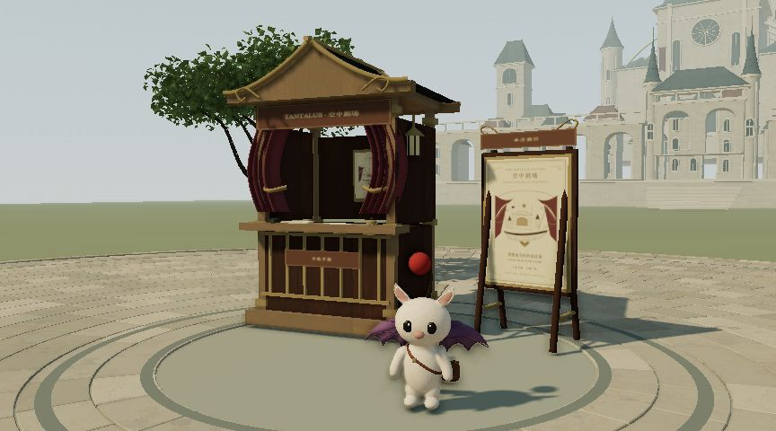
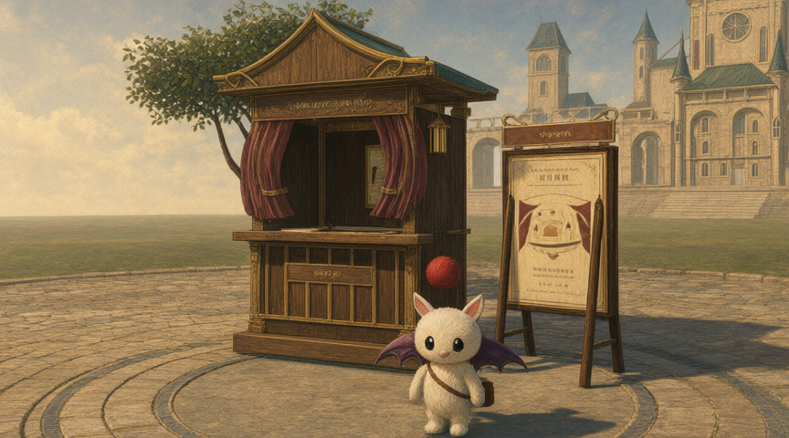

直接使用 3D 渲染首帧
我们当前的角色、材质和布景直接进入 H3 图生视频。
查看 A 的原始首帧

THEATRE IN THE SKY · ONE SHOT / TWO FIRST FRAMES
莫古利在售票亭前挥手，镜头缓慢推近。
相同视频模型、提示词、分辨率、步数与种子；仅首帧不同。
我们当前的角色、材质和布景直接进入 H3 图生视频。

Qwen-Image-2.1 润色同一帧，再使用完全相同的 H3 视频参数。
